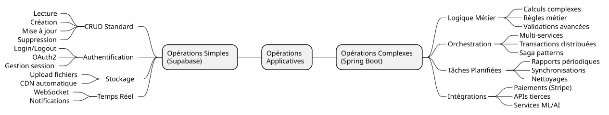
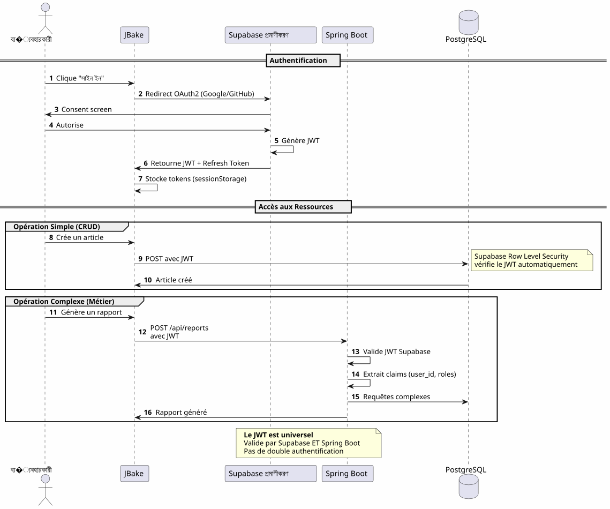
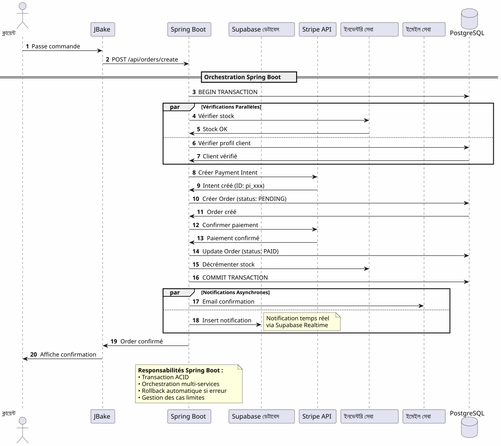

হাইব্রিড আর্কিটেকচার : দুজনের শ্রেষ্ঠ Supabase এবং Spring Boot
Publié le 14 January 2026
Supabase‑এর সহজতা এবং Spring Boot‑এর শক্তি মাঝে বাচাল করার পরিবর্তে, উভয়কে একত্রিত করে কেন না? প্রতিটি প্রযুক্তির শ্রেষ্ঠাংশ ব্যবহার করে একটি হাইব্রিড আর্কিটেকচার খুঁজে বের করুন।
- টক
-
[]
আধুনিক.staticapatyer er মিথ্যা দ্বিধা
আধুনিক একটি স্ট্যাটিক ফ্রন্টএন্ডের সাথে অ্যাপ্লিকেশন তৈরি করার সময়, আমরা প্রায়ই দুটি বিকল্পের মধ্যে একটি বেছে নেওয়ার সম্মুখীন পেয়ে উঠি।
-
ব্যাকএন্ড-অ্যাস-এ-সার্ভিস সমাধানে সম্পূর্ণরূপে নির্ভর করা(Supabase, Firebase) - সিম্পল কিন্তু সীমিত
-
একটি সম্পূর্ণ ব্যাকএন্ড নির্মাণ করা(Spring Boot, Node.js) - শক্তিমান কিন্তু জটিল
এই বেছে নেওয়া একটি মিথ্যা দুর্বিধা। হাইব্রেড আর্কিটেকচার তৃতীয় পথের সুযোগ দেয়: প্রযুক্তিগুলিকে যেখানে তারা শ্রেষ্ঠভাবে কাজ করে, সেখানে ব্যবহার করা
বাস্তু দৃষ্টিভঙ্গি
প্রায়োগিক আর্কিটেকচার : একখণ্ড
এই পদ্ধতিতে, সবচেয়ে সহজ অপারেশনগুলোও (একটি নিবন্ধ পড়া, একটি মন্তব্য তৈরি করা) আপনার ব্যাকএন্ডের মাধ্যমে যেতে হবে। আপনি প্রথম দিন থেকেই জটিলতর খরচে আসবেন।
BaaS আর্কিটেকচার : প্রত্যেক প্রতিনিধি
বিপরিতভাবে, একটি BaaS‑কে সমস্ত কাজ দায়িত্ব দেওয়া প্রথমে আকর্ষণীয় মনে হয়, কিন্তু ব্যবসায়িক লজিক জটিল হওয়ার সাথে সাথে তা তাড়াতাড়ি সীমাবদ্ধ দেখায়।
হাইব্রিড আর্কিটেকচার: দায়িত্বের পৃথককরণ
হাইব্রিড আর্কিটেকচার জটিলতা এবং অপারেশনের প্রকৃতি অনুসারে দায়িত্বগুলো স্পষ্টভাবে পৃথক করে।
ডিজাইন নীতিমালা
নিয়ম ১ : সহজে শুরু করুন, বুদ্ধিমত্তার সাথে বিকাশ করুন
Failed to generate image: PlantUML preprocessing failed: [From <input> (line 14) ]
@startuml
skinparam backgroundColor #FEFEFE
rectangle "ফেজ ১ : MVP" #LightGreen {
component "JBake + Supabase" as mvp
note right
✓ Développement en jours
✓ Coût : 0€
✓ Validation concept
end note
}
rectangle "ফেজ ২ : বৃদ্ধি" #LightYellow {
component "JBake + Supabase
^^^^^
Syntax Error? (Assumed diagram type: component)
@startuml
skinparam backgroundColor #FEFEFE
rectangle "ফেজ ১ : MVP" #LightGreen {
component "JBake + Supabase" as mvp
note right
✓ Développement en jours
✓ Coût : 0€
✓ Validation concept
end note
}
rectangle "ফেজ ২ : বৃদ্ধি" #LightYellow {
component "JBake + Supabase
+ Spring Boot (ঐচ্ছিক)" as growth
note right
✓ Logique métier émerge
✓ Premiers jobs planifiés
✓ Intégrations tierces
end note
}
rectangle "পর্ব 3 : স্কেল" #LightCoral {
component "সম্পূর্ণ আর্কিটেকচার" as scale
note right
✓ Orchestration complexe
✓ Performances optimisées
✓ Cache distribué
end note
}
mvp -down-> growth : Quand la complexité\nle justifie
growth -down-> scale : Optimisation\ncontinue
@enduml
যদি আপনার দরকার না হয়, তাহলে Spring Boot তৈরি করবেন না।Supabase দিয়ে শুরু করুন, জটিলতা জুস্তিফাই করলে Spring Boot যোগ করুন।
সিদ্ধান্ত 2 : অপারেশনের প্রকৃতি অনুযায়ী পৃথকীকরণ

নিয়ম ৩ : একক সত্যের উৎস
একই PostgreSQL উদাহরণ শেয়ার করলে, Supabase এবং Spring Boot জটিল সিঙ্ক্রোনাইজেশনের প্রয়োজন ছাড়াই একই ডেটার উপর কাজ করে।
ফ্লো অর্কেস্ট্রেশন
Flux 1 : কেন্দ্রায়িত প্রমাণীকরণ

গুরুত্বপূর্ণ বিন্দু: একটি প্রমাণীকরণ প্রক্রিয়া, একটি JWT, যেটা সব জায়গায় ব্যবহার করা যায়।
Flux 2 : একটি জটিল ব্যবসা প্রক্রিয়ার অর্কেস্ট্রেশন

স্প্রিং বুট যা আনে: বিশ্বাসযোগ্য জটিল প্রক্রিয়ার ওয়ার্কফ্লো, যা একাধিক সিস্টেমে জড়িত এবং লেনদেন গ্যারান্টি প্রদান করে।
প্রবাহ ৩ : পরিকল্পিত কাজ এবং সিঙ্ক্রোনাইজেশন
Failed to generate image: PlantUML preprocessing failed: [From <input> (line 4) ] @startuml skinparam backgroundColor #FEFEFE participant "Scheduler ^^^^^ Syntax Error? (Assumed diagram type: sequence) @startuml skinparam backgroundColor #FEFEFE participant "Scheduler (Spring Boot)" as scheduler participant "রিপোর্ট সার্ভিস" as report participant "পোস্টgresql" as db participant "বাহ্যিক API" as api participant "ইমেইল সেবা" as email participant "Supabase স্টোরেজ" as storage == Job Quotidien : 2h00 == activate scheduler scheduler -> report : Déclenche génération rapport activate report report -> db : Récupère données\ndes dernières 24h db -> report : Dataset report -> report : Calculs & Agrégations report -> report : Génération PDF report -> storage : Upload PDF storage -> report : URL publique report -> email : Envoie aux admins\navec lien PDF deactivate report == Job Hebdomadaire : Dimanche 3h00 == scheduler -> report : Synchronisation externe activate report report -> api : Fetch données externes api -> report : Nouvelles données report -> db : Mise à jour tables report -> db : Nettoyage données obsolètes deactivate report == Job Mensuel : 1er du mois == scheduler -> report : Facturation activate report report -> db : Liste clients actifs report -> report : Calcul montants report -> api : Génération factures (Stripe) report -> email : Envoi factures deactivate report deactivate scheduler note right of scheduler **Impossible avec Supabase seul** Edge Functions non adaptées pour jobs longs et récurrents end note @enduml
যা স্প্রিং বুট আনেনির্ভরযোগ্য পরিকল্পিত কাজের সাথে state‑management, স্বয়ংক্রিয় রিট্রাই এবং নিশ্চিত এক্সিকিউশন।
সিদ্ধান্ত মেট্রিক্স
Supabase কখন ব্যবহার করা উচিত?

Spring Boot ব্যবহার করবেন কখন?

প্রকল্পের ধরনের অনুযায়ী আর্কিটেকচারের উদাহরণ
ব্লগ / পোর্টফোলিও
বিচার: 100% Supabase যথেষ্ট.
SaaS অ্যাপ্লিকেশন
বিচার: হাইব্রিড আর্কিটেকচার প্রয়োজন। Supabase মূল অংশের জন্য, Spring Boot গুরুত্বপূর্ণ অংশ (শুল্ক, বিলিং) এর জন্য।
ই-কমার্স
বিচারSpring Boot অপরিহার্য। Supabase শুধুমাত্র প্রমাণীকরণ এবং ক্যাটালগের জন্য।
প্রগ্রেসিভ মাইগ্রেশন কৌশল

খরচ ও অপারেশনাল বিবেচনা
খরচের গঠন
Failed to generate image: PlantUML preprocessing failed: [From <input> (line 7) ]
@startuml
skinparam backgroundColor #FEFEFE
package "অনুমানিক মাসিক খরচ" {
rectangle "ফেজ MVP
(0-1000 ব্যবহারকারী)" #LightGreen {
^^^^^
Syntax Error? (Assumed diagram type: activity)
@startuml
skinparam backgroundColor #FEFEFE
package "অনুমানিক মাসিক খরচ" {
rectangle "ফেজ MVP
(0-1000 ব্যবহারকারী)" #LightGreen {
[JBake (GitHub Pages): 0€]
[Supabase: 0€]
[Spring Boot: N/A]
note bottom: **Total: 0€/mois**
}
rectangle "বৃদ্ধি পর্ব
(1k-10k ব্যাবহারকারী)" #LightYellow {
[JBake (GitHub Pages): 0€]
[Supabase: 0€]
[Spring Boot (Cloud Run): 20-50€]
[PostgreSQL (si séparé): 0-30€]
note bottom: **Total: 20-80€/mois**
}
rectangle "ফেজ স্কেল
(10k-100k ব্যবহারকারী)" #LightCoral {
[JBake (Netlify Pro): 19€]
[Supabase Pro: 25€]
[Spring Boot (instances multiples): 100-300€]
[Redis Cache: 20-50€]
[Monitoring: 20€]
note bottom: **Total: 184-414€/mois**
}
}
note right of "ফেজ স্কেল
(10k-100k ব্যবহারকারী)"
À ce stade, les revenus
justifient largement les coûts
end note
@enduml
অপারেশনাল দায়িত্ব
উপসযহার : সম্পূর্ণ ভারসাম্য
Supabase + Spring Boot হাইব্রিড আর্কিটেকচার একটি কম্প্রোমাইস নয়, এটি একটিসামঞ্জস্য.
মনে রাখতে হবে নীতিগুলো

এই আর্কিটেকচার কখন বেছে নিতে হবে?
✅ এই আর্কিটেকচার উপযুক্ত হলে :
-
তুমি দ্রুত MVP শুরু করতে চাও (একে দিনে, মাসে না)
-
আপনি ব্যবসায়িক জটিলতার বৃদ্ধি পূর্বাভাস দেন
-
আপনি প্রারম্ভিক খরচ কমাতে চান
-
আপনি PostgreSQL কে পছন্দ করেন এবং আপনি সত্যের একক উৎস চান
-
আপনি ব্যবসায়িক কোডের জন্য Kotlin এবং কোরুটাইন পছন্দ করেন
-
আপনি পূর্ণ বেন্ডার লক-ইন থেকে পরihar করতে চান
�❌ এই আর্কিটেকচারটি PAS উপযোগী নয় যদি :
-
আপনার প্রকল্পটি সহজ এবং তা সহজই থাকবে (ব্যক্তিগত ব্লগ → ১০০% Supabase যথেষ্ট)
-
আপনি ইতিমধ্যে একটি প্রতিষ্ঠিত ব্যাকএন্ড স্ট্যাক আছেন যা আপনি আয়ত্ত করেছেন
-
আপনি একটি প্রাচীন মোনোলিথ পছন্দ করেন
-
আপনাকে .NET, Python, বা অন্য কোনো ব্যাকএন্ড ভাষার প্রয়োজন হয়
শেষ ওভারভিউ
Failed to generate image: PlantUML preprocessing failed: [From <input> (line 35) ]
@startuml
skinparam backgroundColor #FEFEFE
package "সম্পূর্ণ হাইব্রিড আর্কিটেকচার" {
actor "ব্যবহারকারী" as users
rectangle "Frontend (স্থির)" #SkyBlue {
[JBake / GitHub Pages]
note right: Gratuit, CDN global
}
rectangle "ব্যাকএন্ড সহজ (Supabase)" #LightGreen {
[Auth OAuth2]
[CRUD APIs]
[Storage]
[Realtime]
note right
Gratuit jusqu'à 50k users
Zéro configuration serveur
end note
}
rectangle "ব্যাকএন্ড মেটিয়ার (Spring Boot)" #Coral {
[Orchestration]
[Jobs Planifiés]
[Intégrations]
[Transactions]
note right
Activé uniquement
si nécessaire
end note
}
database "PostgreSQL
^^^^^
Syntax Error? (Assumed diagram type: component)
@startuml
skinparam backgroundColor #FEFEFE
package "সম্পূর্ণ হাইব্রিড আর্কিটেকচার" {
actor "ব্যবহারকারী" as users
rectangle "Frontend (স্থির)" #SkyBlue {
[JBake / GitHub Pages]
note right: Gratuit, CDN global
}
rectangle "ব্যাকএন্ড সহজ (Supabase)" #LightGreen {
[Auth OAuth2]
[CRUD APIs]
[Storage]
[Realtime]
note right
Gratuit jusqu'à 50k users
Zéro configuration serveur
end note
}
rectangle "ব্যাকএন্ড মেটিয়ার (Spring Boot)" #Coral {
[Orchestration]
[Jobs Planifiés]
[Intégrations]
[Transactions]
note right
Activé uniquement
si nécessaire
end note
}
database "PostgreSQL
একমাত্র সত্যেরৎস" as db #LightGray
users --> [JBake / GitHub Pages]
[JBake / GitHub Pages] --> [Auth OAuth2]
[JBake / GitHub Pages] --> [CRUD APIs]
[JBake / GitHub Pages] --> [Storage]
[JBake / GitHub Pages] --> [Realtime]
[JBake / GitHub Pages] --> [Orchestration]
[Auth OAuth2] --> db
[CRUD APIs] --> db
[Orchestration] --> db
[Jobs Planifiés] --> db
[Intégrations] --> db
}
note bottom of db
**Une seule base, deux consommateurs**
• Supabase pour le simple
• Spring Boot pour le complexe
• Aucune synchronisation requise
end note
@enduml
দুইজনের সেরা
এই আর্কিটেকচার আপনatoren দেন:
�🚀 সুপাবেসের গতি
-
ঘন্টায় শুরু, সপ্তাহে না
-
OAuth2 প্রমাণীকরণ কেবল কয়েকটি ক্লকে
-
স্বয়ংক্রিয়ভাবে উত্পন্ন APIs REST
-
সার্ভারের শূন্য কনফিগারেশন
💪 স্প্রিং বুটের শক্তি
-
ইলিগেন্ট অ্যাসিঙ্ক্রোনাস কোডের জন্য কোটলিন ও কোরুটিনস
-
জটিল ব্যবসা প্রক্রিয়ার অর্কেস্ট্রেশন
-
বিশ্বাসযোগ্য সময়সূচি করা জবস
-
লেনদেন ACID গ্যারান্টীকৃত
-
সম্পূর্ণ Spring ইকোসিস্টেম
�💰 প্রগ্রেসিভ অর্থনীতি
-
0€ শুরু করতে এবং যাচাই করতে
-
বৃদ্ধির সাথে অনুসরণ করা খরচ
-
অপ্রয়োজনীয় অতিরিক্ত ইঞ্জিনিয়ারিং না
🎯 স্থাপত্য লচিলতা
-
পুনর্গঠন ছাড়া প্রগ্রেসিভ مایগ্রেশন
-
শুধুমাত্র প্রয়োজন হলে Spring Boot যোগ করুন
-
সম্পূর্ণ ভেন্ডার লক-ইন নেই
-
বিকাশশীল আর্কিটেকচার
আगे যেতে
প্রযুক্তিগত সম্পদ
সুপারবেজ ডকুমেন্টেশন:
ডকুমেন্টেশন Spring Boot :
পূরক নিবন্ধ:
-
JWT দিয়ে APIs নিরাপদ করা
-
PostgreSQL কর্মক্ষমতা অপ্টিমাইজেশন
-
প্রগতিশীল স্থানান্তরের প্যাটার্ন
-
বিতরিত আর্কিটেকচারে ত্রুটি ব্যবস্থাপনা
বাস্তব ব্যবহারের ক্ষেত্র
এই হাইব্রিড আর্কিটেকচারটি সফলভাবে এইতে ব্যবহার করা হয় :
-
SaaS B2B: প্রমাণীকরণ Supabase, বিলিং Spring Boot
-
বাজারগুলো: ক্যাটালগ Supabase, লেনদেন Spring Boot
-
বিষয়বস্তু প্ল্যাটফর্মSupabase নিবন্ধ, Spring Boot বিশ্লেষণ
-
অভ্যন্তরীণ সরঞ্জাম: CRUD Supabase, কর্মপ্রবাহ Spring Boot
স্টার্ট চেকলিস্ট
ফেজ ১ - ভিত্তি (সপ্তাহ ১)
-
Supabase অ্যাকাউন্ট তৈরি করুন - [ ] PostgreSQL প্রকল্প কনফিগার করুন - [ ] Auth সক্রিয় করুন (Google, GitHub) - [ ] প্রারম্ভিক স্কিমা সংজ্ঞায়িত করুন - [ ] Row Level Security কনফিগার করুন - [ ] JBake থেকে APIs পরীক্ষা করুন
Phase 2 - MVP (সপ্তাহ 2-3)
-
প্রধান পাতা বাস্তবায়ন করুন - [ ] OAuth2 প্রমাণীকরণ ইন্টিগ্রেট করুন - [ ] CRUD ফর্ম তৈরি করুন - [ ] ফাইল들의 জন্য স্টোরেজ কনফিগার করুন - [ ] গিটহাব পেজে স্থাপন করুন - [ ] বাস্তবিক অবস্থায় পরীক্ষা করা
ফেজ 3 - বিকাশ (প্রয়োজন অনুসারে)
-
জটিল লজিকের দরকার চিহ্নিত করুন - [ ] Spring Boot প্রকল্প তৈরি করুন যদি প্রয়োজন হলে - [ ] Supabase JWT যাচাই কনফিগার করুন - [ ] PostgreSQL Supabase-এ সংযোগ করুন - [ ] জটিল বৈশিষ্ট্য মাইগ্রেট করা - [ ] নিশ্চিত সময়ের কাজ বাস্তবায়ন করা - [ ] স্প্রিং বুট ডিপ্লয় করা (Cloud Run, etc.)
পরিহার্য বিরোধী প্রতিরূপ
❌ করবেন না :
-
Supabase এবং Spring Boot এর মধ্যে ডেটা ডুপ্লিকেট করুন
-
দুটি পৃথক PostgreSQL ডেটাবেস তৈরি করুন
-
আপনি নিজে প্রমাণীকরণ কোড করুন
-
সাধারন CRUDের জন্য Spring Boot ব্যবহার করুন
-
প্রারంభে অতিরিক্ত আর্কিটেকচার করা
-
Supabase এর Row Level Security উপেক্ষা করা
✅ ভালোভাবে করুন:
-
একটি PostgreSQL ডেটাবেস শেয়ার করুন
-
Supabase কে প্রমাণীকরণ পরিচালনা করতে দিন
-
Spring Boot কেবল জটিলতার জন্য ব্যবহার করুন
-
শুরু সহজে, ধীরে ধীরে উন্নয়ন
-
প্রযুক্তির প্রতিটি শক্তি ব্যবহার করুন
-
ডাটাবেস স্তরে RLS দিয়ে সুরক্ষিত করুন
উন্নয়নের দৃষ্টিভঙ্গি
নতুন ক্ষমতা যোগ
স্কেলিং অনুভূমিক
আপনার অ্যাপ্লিকেশন যখন বাড়ে, হাইব্রিড আর্কিটেকচার স্বাভাবিকভাবে স্কেল হয় :
Supabase :
-
স্বয়ংক্রিয়ভাবে মিলিয়ন অপারেশন পর্যন্ত স্কেল করে
-
পড়ার প্রতিলিপি পড়ার কর্মক্ষমতার জন্য
-
নিরাপত্তার জন্য পয়েন্ট-ইন-টাইম রিকভারি
Spring Boot :
-
বেকলোড ব্যালেন্সারের পিছনে একাধিক ইনস্ট্যান্স
-
স্টেটলেস ডিজাইন হরিজোন্টাল স্কেলিংকে সহজ করে
-
Kubernetes অর্কেসট্রেশনের জন্য যদি প্রয়োজন হয়
PostgreSQL :
-
বড় টেবিলের জন্য পার্টিশনিং
-
সংযোগ সংগ্রহ (PgBouncer)
-
শার্ডিং সত্যিই প্রয়োজনীয় (দুর্দান্ত)
স্থাপত্য সাক্ষ্য
স্টার্টআপ SaaS (50k ব্যবহারকারী)
_ আমরা 100% Supabase দিয়ে শুরু করেছিলাম। 5k ব্যবহারকারীর জন্য, আমরা শুধুমাত্র Stripe বিলিং ও মাসিক রিপোর্টের জন্য Spring Boot যোগ করেছি। এক বছর পরে, আমাদের অপারেশনের 80% এখনও Supabase-এর মাধ্যমে চলছে। Spring Boot শুধু গুরুত্বপূর্ণ অংশটি পরিচালনা করে। এই বিচ্ছেদ আমাদেরকে রিফ্যাক্টরিং ছাড়াই স্কেল করতে সহায়তা করেছে। _
ই-লার্নিং প্ল্যাটফর্ম (10k ব্যবহারকারী)
_ সুপabase‑এর OAuth2 প্রমাণীকরণ আমাদেরকে ৩ সপ্তাহ উন্নয়ন সময় বাঁচিয়েছে। স্বয়ংক্রিয়ভাবে তৈরি API‑গুলো আমাদের পূর্ণ কোর্স ক্যাটালগ পরিচালনা করে। Spring Boot শুধু PDF সার্টিফিকেট এবং প্রগতি ইমেইলের জন্য ব্যবহৃত হয়। সহজ, বজায় রাখা যায় এবং প্রসারনযোগ্য আর্কিটেকচার। _
B2B মার্কেটপ্লেস (3k ব্যবহারকারী)
_ Spring Boot ক্রেতা এবং বিক্রেতাদের মধ্যে লেনদেন পরিচালনা করে (গুরুত্বপূর্ণ)। Supabase বাকি সবকিছু পরিচালনা করে : প্রোফাইল, বাস্তব সময়ের মেসেজিং, ডকুমেন্ট। ত্যাঁদের একই PostgreSQL ডাটাবেস শেয়ার করার কারণে আমাদের জটিল সিঙ্ক্রোনাইজেশনের প্রয়োজন থেকে বাঁচায়। এটি আমাদের করা সবচেয়ে ভাল আর্কিটেকচারেল বেছে নেওয়া। _
সারাংশ: একটি আধুনিক স্থাপত্য পরিদর্শন
Supabase + Spring Boot হাইব্রিড আর্কিটেকচার একটি নতুন প্যারাডিগম নির্দেশ করে:বাস্তুশিল্প বিশেষায়ন.
Failed to generate image: PlantUML preprocessing failed: [From <input> (line 20) ]
@startuml
skinparam backgroundColor #FEFEFE
rectangle "প্রাচীন প্যাডিগম" #LightCoral {
card "ব্যাকএন্ডে সব কিছু" {
[Auth]
[CRUD]
[Logique Métier]
[Jobs]
[Storage]
[Realtime]
}
note bottom
Complexité maximale
dès le jour 1
end note
}
rectangle "নতুন প�্যারाडিমে" #LightGreen {
card "Supabase
^^^^^
Syntax Error? (Assumed diagram type: component)
@startuml
skinparam backgroundColor #FEFEFE
rectangle "প্রাচীন প্যাডিগম" #LightCoral {
card "ব্যাকএন্ডে সব কিছু" {
[Auth]
[CRUD]
[Logique Métier]
[Jobs]
[Storage]
[Realtime]
}
note bottom
Complexité maximale
dès le jour 1
end note
}
rectangle "নতুন প�্যারाडিমে" #LightGreen {
card "Supabase
(সুবিধা)" {
[Auth]
[CRUD Simple]
[Storage]
[Realtime]
}
card "Spring Boot
(বিচেদন)" {
[Logique Métier]
[Jobs]
[Intégrations]
}
note bottom
Complexité progressive
ajoutée seulement si nécessaire
end note
}
[Ancien Paradigme] -right-> [Nouveau Paradigme] : Évolution
@enduml
মৌলিক নীতি:বিদ্যমান পরিষেবা হিসেবে কোনো কিছু তৈরি করবেন না। আপনার অ্যাপ্লিকেশনকে আলাদা করে তোলে এমন দিকগুলোকে ফোকাস করুন।
৮০/২০ নিয়ম
অধিকাংশ অ্যাপ্লিকেশনে :
-
৮০% অপারেশনএগুলো স্ট্যান্ডার্ড CRUD → Supabase
-
20% অপারেশনব্যবসায়িক লজিক প্রয়োজন → Spring Boot
এই প্রকৃতিশীল নিয়মটি হাইব্রিড আর্কিটেকচারকে যুক্তিসঙ্গত করে।
শেষ নিষ্কর্ষ
হাইব্রিড আর্কিটেকচার একটি টেকনিক্যাল কম্প্রিজ নয়, তা একটিরণনীতিমূলক সিদ্ধান্ত।
এটি আপনাকে অনুমতি দেয়:
-
�✅ একটি ফাংশনাল এমভিপি দিয়ে দ্রুত শুরু করুন
-
✅ কোনো বড় বিনিয়োগ ছাড়াই আপনার বাজার যাচাই করুন
-
জটিলতা প্রয়োজন হলে ধীরে ধীরে উন্নতি লাভ করুন
-
�✅ প্রতিটি ধাপে আপনার খर्चকে নিয়ন্ত্রণ করুন
-
প্রযুক্তির প্রতিটি থেকে সেরা ব্যবহার করুন
-
✅ প্রারম্ভিক অতিরিক্ত প্রকৌশলীকরণ এড়িয়ে চলা
-
�✅ নমনীয়তা বজায় রাখুন ভবিষ্যৎ জন্য
এটি প্রতিনিধিত্ব করে :
-
�🎯প্রাগ্মাটিজম: যে প্রযুক্তি যেখানে সে দক্ষ
-
�🚀বেগ: ন্যূনতম বাজারের সময়
-
�💰অর্থনীতি: মূল্যের সাথে সামঞ্জস্যপূর্ণ هزینه
-
🔮স্কেলেবিলিটি: আপনার সাথে বাড়ে যাওয়া আর্কিটেকচার
-
🛡️দৃঢ়তা: প্রমাণিত এবং বিশ্বাসযোগ্য সেবা
আপনার পরবর্তী ধাপ
�যদি এই আর্কিটেকচার আপনার সাথে কথা বলে, এখানে শুরু করার জায়গা হলো:
-
সুপাবেজ অ্যাকাউন্ট তৈরি করুন(বিনা মূল্যে)
-
আপনার ন্যূনতম ডেটা স্কিমা নির্ধারণ করুন
-
OAuth2 প্রমাণীকরণ কনফিগার করুন
-
আপনার প্রথম JBake পৃষ্ঠা তৈরি করুন যা API ব্যবহার করে
-
গিটহাব পেজে স্থাপন করুন
আপনি একটি কার্যকর MVP থাকবেনকুচে দিন।
Spring Boot স্বাভাবিকভাবে আসবে, যখন আপনার প্রয়োজন হবে। আগে নয়।
হাইব্রিড আর্কিটেকচার হলো সঠিক সময়ে সঠিক জিনিস তৈরি করার কला।
শুভ উন্নয়ন! 🚀
এই लेखটা শেয়ার করুন যদি আপনি মনে করেন যে এটি অন্যান্য ডেভেলপারদের সঠিক আর্কিটেকচারাল পছন্দ বেছে নেওয়ার সাহায্য করতে পারে।